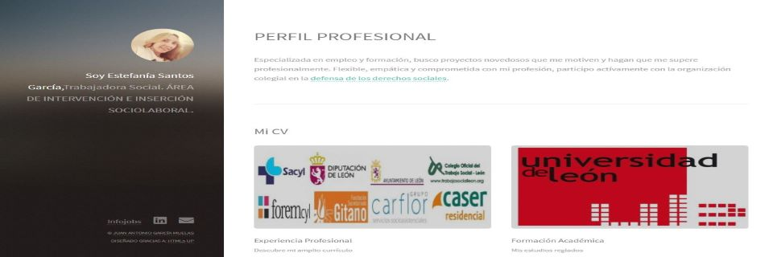
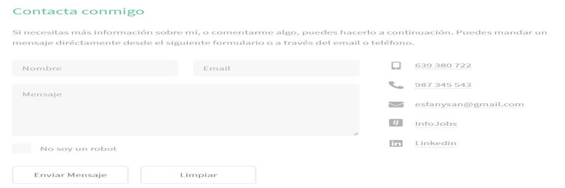
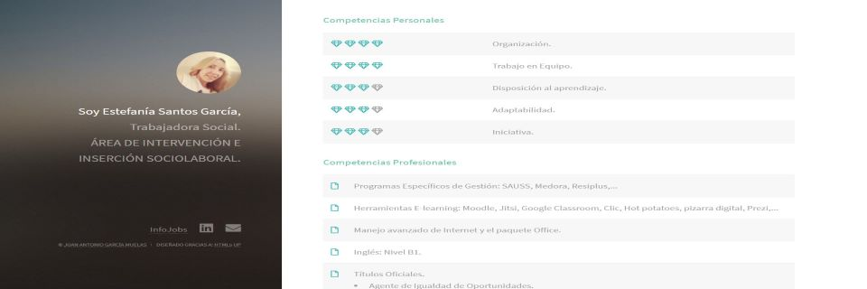

CV Digital Estefanía Santos
Web de perfil profesional.
Curriculum Vitae Online.
Estefanía es una profesional de dilatada experiencia en su profesión que quería darle un nuevo giro a su nada tradicional Currículum Vitae, moderno, actualizado y muy distinto del que la mayoría estamos acostumbrados a ver con un simple word que suelta en cascada la experiencia.
Basándose en el mismo, se busca focalizar por una parte su rol profesional en un banner lateral, con los accesos a sus redes sociales y una rápida presentación con las áreas principales y una zona de contacto.
Por otro, las áreas de valor de su Cv se presentan en distintas vistas de rápido acceso con contenidos de ágil lectura gracias al diseño propuesto.
Puedes ver el resultado desde este enlace.
¿Piensas como Estefanía y quieres darle una vuelta a tu CVitae?. Recuerda mi contacto.